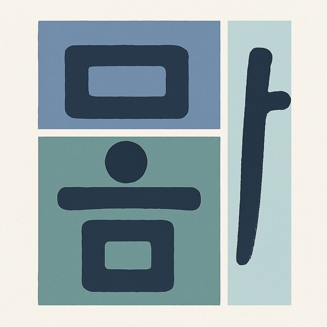

Caring for Body and Mind, Together
뫔건강연구소
몸과 마음을 함께 돌봄
Our Mission
We develop and study Meditation Movement programs that bring bodily movement and mindfulness together for people who need more health care and support.
Our Research
Centered on Meditation Movement, we develop interventions for people who need more care, including young adults with schizophrenia, socially withdrawn and isolated young adults, people with mental illness, and community-dwelling older adults, and we study their effects and lived experiences.
Our People
Mwam Health Research Lab always welcomes researchers and practitioners who care about the health of body and mind. If you would like to join us, please reach out via CONTACT.
Program of Research

Methodology
Qualitative ResearchIntervention DevelopmentEffectiveness Evaluation
Population
Young Adults with SchizophreniaSocially Withdrawn and Isolated Young AdultsPeople with Mental IllnessCommunity-Dwelling Older Adults